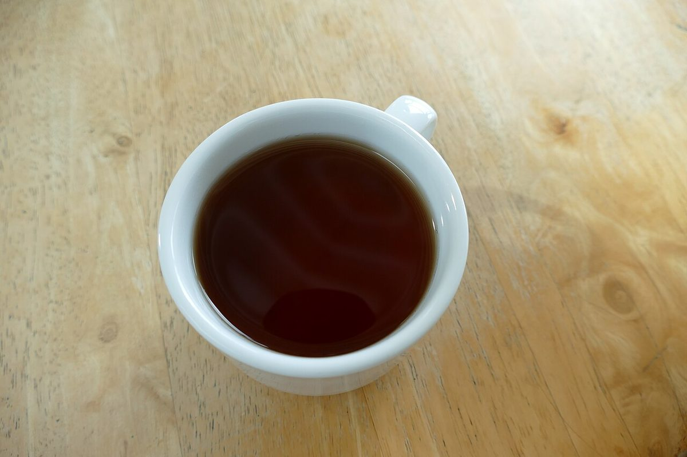

制作側の連想
小さなレーシングカー模型を、配置図にしてみる
このサイトは、手のひらサイズのレーシングカー模型(ミニ四駆と呼ばれるタイプ)を真横から描き、六つの部位に番号をふって並べた図を飾りにして作りました。制作側の連想で、お店の理念・由来とは無関係です。実際の製品の仕様を示すものでもありません。
凡例
六つの部位
- 1ボディ車体の上をおおう、流れるような形のカバー。
- 2ガイドローラー前後の端についた、コースの壁に沿って走るための小さな車輪。
- 3モーター車体の中ほどに収まる、車輪を回す力を生む円筒形の部品。
- 4ギヤカバーモーターの回転を車輪に伝える歯車をおおう部品。
- 5タイヤ路面に触れて車体を前へ進める、大きな車輪。
- 6シャーシ全ての部品を取り付ける、車体の土台となる平らな骨組み。
ギャラリー(イメージ)
パンとカフェの写真



写真はパンとカフェのイメージです。お店のものではなく、お店で提供している商品を示すものでもありません。
ご案内
お店のこと(確認できたものだけ)
| 所在地 | 〒879-4724 大分県玖珠郡九重町菅原１８５０−１９ |
|---|---|
| 電話 | 準備中 |
| 営業時間 | 準備中 |
| 定休日 | 準備中 |
| ご予約 | 準備中 |
| 駐車場 | 準備中 |
| SNS | Instagram @bakery_cafe_humpty_dumpty |